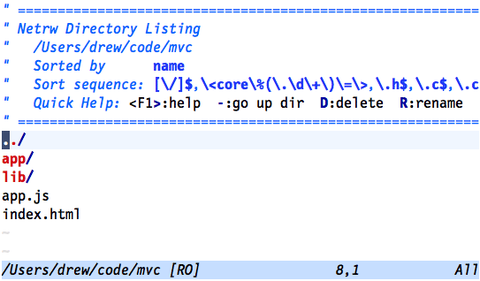
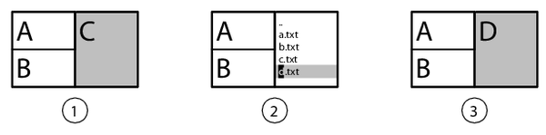

{% include JB/setup %}
{% raw %}
<div>


<table class="arr-recipe" id="sec.netrw">
<tr class="calibre14">
<td class="arr-recipe-number">Tip 43</td>
<td class="arr-recipe-name">Explore the File System with netrw</td>
</tr>
</table>
<p id="N14697" class="calibre4">
<span class="calibre5">
        In addition to letting us view (and edit) the contents of a file, Vim also lets us view the contents of a directory. The netrw plugin, included in the Vim distribution, allows us to explore the file system.
    </span>
</p>
<h3 class="calibre22">Preparation</h3>
<p id="N146A9" class="calibre4">
        The functionality described in this tip is not implemented in Vim’s core source code but in a plugin called netrw. This plugin comes as standard with the Vim distribution, so we don’t have to install anything, but we do need to make sure that Vim is configured to load plugins. These lines of configuration are the minimum requirement for your <code class="cf">vimrc</code> file:
      </p>
<table class="processedcode">
<tr class="calibre28">
<td colspan="2" class="calibre33">
<a href="http://media.pragprog.com/titles/dnvim/code/essential.vim">essential.vim</a>
</td>
</tr>
<tr class="calibre28">
<td class="codeprefix" valign="top">
<span> </span>
</td>
<td class="codeline" valign="top">
<div class="calibre29">
​<code class="calibre30">​<strong class="prompt">set</strong> nocompatible​</code>​</div>
</td>
</tr>
<tr class="calibre28">
<td class="codeprefix" valign="top">
<span> </span>
</td>
<td class="codeline" valign="top">
<div class="calibre29">
​<code class="calibre30">​<strong class="prompt">filetype</strong> plugin <strong class="prompt">on</strong>​</code>​</div>
</td>
</tr>
</table>
<h3 class="calibre22">Meet netrw—Vim’s Native File Explorer</h3>
<p id="N146DE" class="calibre4">
        If we launch Vim with the path to a directory rather than a file, it will start up with a file explorer window:
      </p>
<table class="processedcode">
<tr class="calibre28">
<td class="codeprefix" valign="top">
<span>=&gt; </span>
</td>
<td class="codeline" valign="top">
<div class="calibre29">
​<code class="calibre30">​<strong class="prompt">$ cd code/file/mvc</strong>​</code>​</div>
</td>
</tr>
<tr class="calibre28">
<td class="codeprefix" valign="top">
<span>=&gt; </span>
</td>
<td class="codeline" valign="top">
<div class="calibre29">
​<code class="calibre30">​<strong class="prompt">$ ls</strong>​</code>​</div>
</td>
</tr>
<tr class="calibre28">
<td class="codeprefix" valign="top">
<span>&lt;= </span>
</td>
<td class="codeline" valign="top">
<div class="calibre29">
​<code class="calibre30">​app     app.js  index.html      lib​</code>​</div>
</td>
</tr>
<tr class="calibre28">
<td class="codeprefix" valign="top">
<span>=&gt; </span>
</td>
<td class="codeline" valign="top">
<div class="calibre29">
​<code class="calibre30">​<strong class="prompt">$ vim .</strong>​</code>​</div>
</td>
</tr>
</table>
<p id="N146FC" class="calibre4">
        The screenshot in <a xmlns:str="http://exslt.org/strings" href="#figure.netrw">Figure 2, ​<em class="calibre5">netrw—Vim's “native” file explorer</em>​</a>, shows how the file explorer looks. It’s a regular Vim buffer, but instead of showing the contents of a file, it represents the contents of a directory.
      </p>
<div class="figure" id="figure.netrw">
<div class="calibre1">

</div>
<div class="figurecaption">
<hr class="calibre37"/>Figure 2. netrw—Vim’s “native” file explorer</div>
</div>
<p id="N14710" class="calibre4">
        We can move the cursor up and down using the <span class="calibre17">k</span> and <span class="calibre17">j</span> keys. When we press the <span class="calibre17">&lt;CR&gt;</span> key, it opens the item under the cursor. If the cursor is positioned on a directory, the explorer window is redrawn to show the contents of that directory. If the cursor is positioned on a filename, the file is loaded into a buffer in the current window, replacing the file explorer. We can open the parent directory by pressing the <span class="calibre17">-</span> key or by positioning the cursor on the <code class="cf">..</code> item and pressing <span class="calibre17">&lt;CR&gt;</span>.
      </p>
<p id="N14725" class="calibre4">
        We’re not limited to navigating the directory listing with <span class="calibre17">j</span> and <span class="calibre17">k</span> keys. We can use all of the motions that are available to us in a regular Vim buffer. For example, if we wanted to open the <code class="cf">index.html</code> file, we could search for <code class="cf">/html</code>
<span class="calibre17">&lt;CR&gt;</span>, putting our cursor right where we need it.
      </p>
<h3 class="calibre22">Opening the File Explorer</h3>
<p id="N1473A" class="calibre4">
	  We can open the file explorer window with the <code class="cf">:edit {path}</code> command by supplying a directory name (instead of a filename) as the <code class="cf">{path}</code> argument. The dot symbol stands for the current working directory, so if we run the <code class="cf">:edit .</code> command, we can bring up a file explorer for the project root.
      </p>
<p id="N1475A" class="calibre4">
        If we wanted to open a file explorer for the directory of the current file, we could do so by typing <code class="cf">:edit %:h</code> (see <a xmlns:str="http://exslt.org/strings" href="f_0066.html#sec.edit.active.directory">​<em class="calibre5">Open a File Relative to the Active File Directory</em>​</a>, for an explanation). But the netrw plugin provides a more convenient way with the <code class="cf">:Explore</code> command (see <strong xmlns:str="http://exslt.org/strings" class="calibre10">:Explore</strong>
<a xmlns:str="http://exslt.org/strings" href="http://vimdoc.sourceforge.net/htmldoc/pi_netrw.html#:Explore">
​</a>).
      </p>
<p id="N1476B" class="calibre4">
        Both of these commands can be abbreviated. Instead of typing out <code class="cf">:edit .</code>, we can get away with just <code class="cf">:e.</code>—we don’t even need the space before the dot. And <code class="cf">:Explore</code> can be truncated right down to <code class="cf">:E</code>. This table summarizes the long- and shorthand forms of these commands:
      </p>
<table class="simpletable">
<thead class="calibre23">
<tr class="calibre7">
<th class="hlines">Ex Command</th>
<th class="hlines">Shorthand</th>
<th class="hlines">Effect</th>
</tr>
</thead>
<tbody class="calibre6">
<tr class="calibre7">
<td class="calibre24">
<p class="last-para-in-cell">
<code class="cf">:edit .</code>
</p>
</td>
<td class="calibre24">
<p class="last-para-in-cell">
<code class="cf">:e.</code>
</p>
</td>
<td class="calibre24">
<p class="last-para-in-cell">Open file explorer for current working directory</p>
</td>
</tr>
<tr class="calibre7">
<td class="calibre26">
<p class="last-para-in-cell">
<code class="cf">:Explore</code>
</p>
</td>
<td class="calibre26">
<p class="last-para-in-cell">
<code class="cf">:E</code>
</p>
</td>
<td class="calibre26">
<p class="last-para-in-cell">Open file explorer for the directory of the active buffer</p>
</td>
</tr>
</tbody>
</table>
<p id="N147A8" class="calibre4">
        In addition to <code class="cf">:Explore</code>, netrw also provides <code class="cf">:Sexplore</code> and <code class="cf">:Vexplore</code> commands, which open the file explorer in a horizontal split window or vertical split window, respectively.
      </p>
<h3 class="calibre22">Working with Split Windows</h3>
<p id="N147C2" class="calibre4">
        The classic GUI for a text editor presents the file explorer in a sidebar, sometimes known as the <span class="calibre5">project drawer</span>. If you’re used to this kind of interface, then it might seem strange that Vim’s <code class="cf">:E</code> and <code class="cf">:e.</code> commands behave the way they do by <span class="calibre5">replacing</span> the contents of the current window with a file explorer. There’s a good reason for this: it works well with split windows.
      </p>
<p id="N147E0" class="calibre4">
        Consider the layout in the first frame of this image:</p>
<div xmlns:str="http://exslt.org/strings" class="calibre1">

</div>
<p id="N147E7" class="calibre4">
        Here we see three split windows, each displaying a different buffer. Let’s imagine for a moment that a project drawer containing a file explorer was bolted to the side of Vim’s interface. If we want to open a file by clicking its name in the project drawer, where would it open?
      </p>
<p id="N147EA" class="calibre4">
        The window labeled <span class="calibre5">C</span> is active (as indicated by the shading), so that would seem to be the natural target. But the relationship between the project drawer and the active window is not immediately apparent. It would be easy to lose track of which window was active, leading to a surprise result when, on selecting a file from the project drawer, it didn’t open where you expected it to.
      </p>
<p id="N147F0" class="calibre4">
        Now let’s remove our imaginary project drawer from this scenario and consider the way it actually works in Vim. If we run the <code class="cf">:Explore</code> command, the active window is replaced with a file explorer, as illustrated by frame 2 of the figure. There can be no doubt that when a file is selected it will load in the same window.
      </p>
<p id="N147F6" class="calibre4">
        Think of each window as a playing card. One side of the card shows the contents of a file, and the other side shows the file explorer. When we run the <code class="cf">:Explore</code> command, the card for the active window flips over to show the side with the file explorer (frame 2 of the figure). After choosing the file we want to edit, we press <span class="calibre17">&lt;CR&gt;</span> and the card flips over again, this time showing the contents of the file that we just selected (frame 3 of the figure). After summoning the file explorer view, if we decide that we want to switch back to the buffer we were already editing, we can do so using the <span class="calibre17">&lt;C-^&gt;</span> command.
		</p>
<p id="N14802" class="calibre4">
        In a sense, we could say that Vim’s windows have two modes: one for working with files and one for working with directories. This model works together with Vim’s split window interface perfectly, whereas the notion of a project drawer doesn’t really fit.
      </p>
<h3 class="calibre22">Doing More with netrw</h3>
<p id="N14815" class="calibre4">
        The netrw plugin doesn’t just let us explore the file system. We can create new files (<strong xmlns:str="http://exslt.org/strings" class="calibre10">netrw-%</strong>
<a xmlns:str="http://exslt.org/strings" href="http://vimdoc.sourceforge.net/htmldoc/pi_netrw.html#netrw-%">
​</a>) or directories (<strong xmlns:str="http://exslt.org/strings" class="calibre10">netrw-d</strong>
<a xmlns:str="http://exslt.org/strings" href="http://vimdoc.sourceforge.net/htmldoc/pi_netrw.html#netrw-d">
​</a>), rename existing ones (<strong xmlns:str="http://exslt.org/strings" class="calibre10">netrw-rename</strong>
<a xmlns:str="http://exslt.org/strings" href="http://vimdoc.sourceforge.net/htmldoc/pi_netrw.html#netrw-rename">
​</a>), or delete them (<strong xmlns:str="http://exslt.org/strings" class="calibre10">netrw-del</strong>
<a xmlns:str="http://exslt.org/strings" href="http://vimdoc.sourceforge.net/htmldoc/pi_netrw.html#netrw-del">
​</a>). For a demonstration, watch episode 15 of Vimcasts.<a id="FNPTR-14" href="f_0070.html#FOOTNOTE-14">[14]</a>
</p>
<p id="N1482D" class="calibre4">
        We haven’t even touched on the killer feature that gives the plugin its name: netrw makes it possible to read and write files across a network. The plugin can use many protocols, including <code class="cf">scp</code>, <code class="cf">ftp</code>, <code class="cf">curl</code>, and <code class="cf">wget</code>, depending on what’s available on your system. To find out more, look up <strong xmlns:str="http://exslt.org/strings" class="calibre10">netrw-ref</strong>
<a xmlns:str="http://exslt.org/strings" href="http://vimdoc.sourceforge.net/htmldoc/pi_netrw.html#netrw-ref">
​</a>.
    </p>
<script src="scripts/book_local.js" type="text/javascript" class="calibre2"/>
</div>

{% endraw %}

